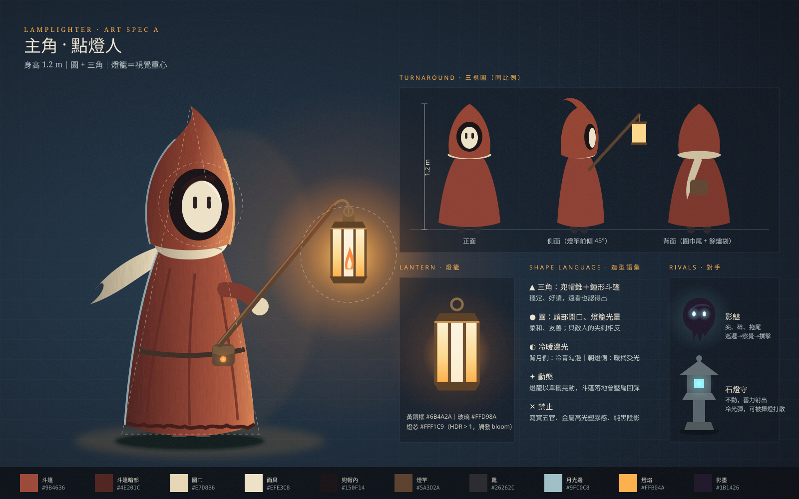

A lantern in the mist · 118
LAMPLIGHTER
霧湖上的三座燈台熄滅了，影魅在石間遊蕩。提燈渡湖，點亮它們，打開月門。
WASD 移動 · SPACE 跳 · J／左鍵 揮燈 · SHIFT 閃避 · 按住 E 點燈 · 滑鼠 視角 · ESC 暫停
目標
點亮第一座燈台
How to play
渡過霧湖，依序點亮三座燈台。三座都亮起後，月門的影幕會散去；穿過月門就能通關。燈焰就是生命，被影魅撲中、被光彈打中或掉進湖裡都會少一朵。
小提示
影魅撲擊前會後縮蓄力，趁這時揮燈可以打斷；石燈守的光彈能用燈打散。點燈時的光爆會震退附近的影魅。
Step 1 · Art direction

Paused
霧還在湖面上，燈也還亮著。
The gate is open · 月門開啟